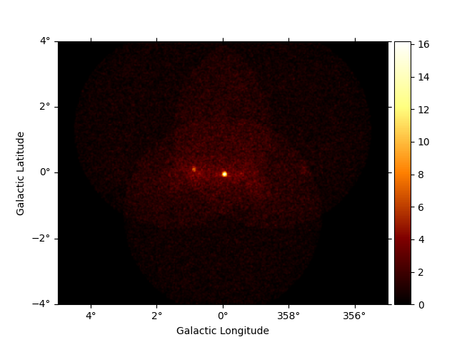
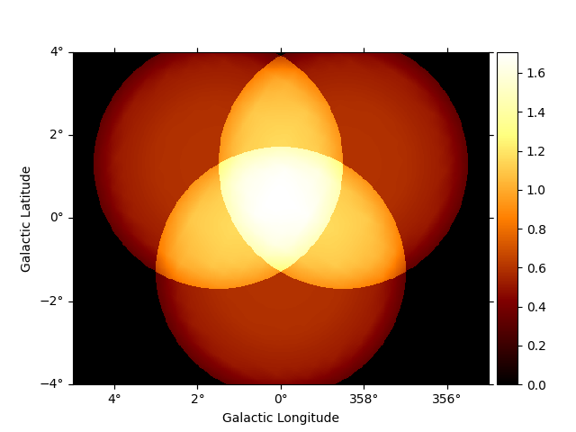
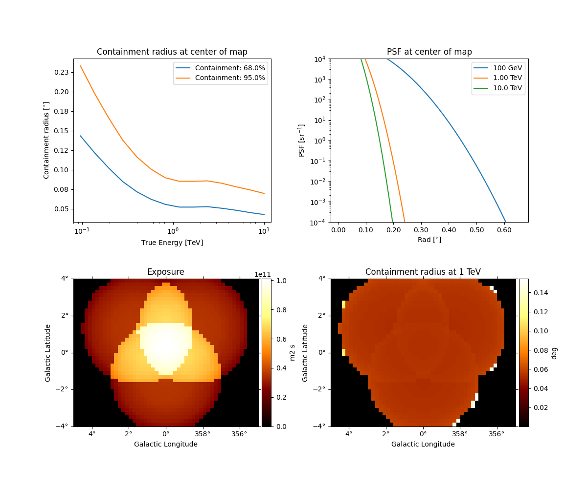

Note
Click here to download the full example code or to run this example in your browser via Binder
3D detailed analysis#
Perform detailed 3D stacked and joint analysis.
This tutorial does a 3D map based analsis on the galactic center, using simulated observations from the CTA-1DC. We will use the high level interface for the data reduction, and then do a detailed modelling. This will be done in two different ways:
stacking all the maps together and fitting the stacked maps
handling all the observations separately and doing a joint fitting on all the maps
from pathlib import Path
import numpy as np
from scipy.stats import norm
import astropy.units as u
from regions import CircleSkyRegion
# %matplotlib inline
import matplotlib.pyplot as plt
from gammapy.analysis import Analysis, AnalysisConfig
from gammapy.datasets import MapDataset
from gammapy.estimators import ExcessMapEstimator
from gammapy.modeling import Fit
from gammapy.modeling.models import (
ExpCutoffPowerLawSpectralModel,
FoVBackgroundModel,
Models,
PointSpatialModel,
SkyModel,
)
Check setup#
from gammapy.utils.check import check_tutorials_setup
check_tutorials_setup()
System:
python_executable : /home/runner/micromamba-root/envs/gammapy-dev/bin/python
python_version : 3.8.13
machine : x86_64
system : Linux
Gammapy package:
version : 1.1.dev18+gfa09ca357
path : /home/runner/work/gammapy-docs/gammapy-docs/gammapy/gammapy
Other packages:
numpy : 1.22.4
scipy : 1.9.1
astropy : 5.1
regions : 0.6
click : 8.1.3
yaml : 6.0
IPython : 8.5.0
jupyterlab : 3.4.8
matplotlib : 3.6.1
pandas : 1.5.0
healpy : 1.16.1
iminuit : 2.17.0
sherpa : 4.15.0
naima : 0.10.0
emcee : 3.1.3
corner : 2.2.1
Gammapy environment variables:
GAMMAPY_DATA : /home/runner/work/gammapy-docs/gammapy-docs/gammapy-datasets/dev
Analysis configuration#
In this section we select observations and define the analysis geometries, irrespective of joint/stacked analysis. For configuration of the analysis, we will programmatically build a config file from scratch.
config = AnalysisConfig()
# The config file is now empty, with only a few defaults specified.
print(config)
# Selecting the observations
config.observations.datastore = "$GAMMAPY_DATA/cta-1dc/index/gps/"
config.observations.obs_ids = [110380, 111140, 111159]
# Defining a reference geometry for the reduced datasets
config.datasets.type = "3d" # Analysis type is 3D
config.datasets.geom.wcs.skydir = {
"lon": "0 deg",
"lat": "0 deg",
"frame": "galactic",
} # The WCS geometry - centered on the galactic center
config.datasets.geom.wcs.width = {"width": "10 deg", "height": "8 deg"}
config.datasets.geom.wcs.binsize = "0.02 deg"
# Cutout size (for the run-wise event selection)
config.datasets.geom.selection.offset_max = 3.5 * u.deg
config.datasets.safe_mask.methods = ["aeff-default", "offset-max"]
# We now fix the energy axis for the counts map - (the reconstructed energy binning)
config.datasets.geom.axes.energy.min = "0.1 TeV"
config.datasets.geom.axes.energy.max = "10 TeV"
config.datasets.geom.axes.energy.nbins = 10
# We now fix the energy axis for the IRF maps (exposure, etc) - (the true energy binning)
config.datasets.geom.axes.energy_true.min = "0.08 TeV"
config.datasets.geom.axes.energy_true.max = "12 TeV"
config.datasets.geom.axes.energy_true.nbins = 14
print(config)
AnalysisConfig
general:
log: {level: info, filename: null, filemode: null, format: null, datefmt: null}
outdir: .
n_jobs: 1
datasets_file: null
models_file: null
observations:
datastore: $GAMMAPY_DATA/hess-dl3-dr1
obs_ids: []
obs_file: null
obs_cone: {frame: null, lon: null, lat: null, radius: null}
obs_time: {start: null, stop: null}
required_irf: [aeff, edisp, psf, bkg]
datasets:
type: 1d
stack: true
geom:
wcs:
skydir: {frame: null, lon: null, lat: null}
binsize: 0.02 deg
width: {width: 5.0 deg, height: 5.0 deg}
binsize_irf: 0.2 deg
selection: {offset_max: 2.5 deg}
axes:
energy: {min: 1.0 TeV, max: 10.0 TeV, nbins: 5}
energy_true: {min: 0.5 TeV, max: 20.0 TeV, nbins: 16}
map_selection: [counts, exposure, background, psf, edisp]
background:
method: null
exclusion: null
parameters: {}
safe_mask:
methods: [aeff-default]
parameters: {}
on_region: {frame: null, lon: null, lat: null, radius: null}
containment_correction: true
fit:
fit_range: {min: null, max: null}
flux_points:
energy: {min: null, max: null, nbins: null}
source: source
parameters: {selection_optional: all}
excess_map:
correlation_radius: 0.1 deg
parameters: {}
energy_edges: {min: null, max: null, nbins: null}
light_curve:
time_intervals: {start: null, stop: null}
energy_edges: {min: null, max: null, nbins: null}
source: source
parameters: {selection_optional: all}
AnalysisConfig
general:
log: {level: info, filename: null, filemode: null, format: null, datefmt: null}
outdir: .
n_jobs: 1
datasets_file: null
models_file: null
observations:
datastore: $GAMMAPY_DATA/cta-1dc/index/gps
obs_ids: [110380, 111140, 111159]
obs_file: null
obs_cone: {frame: null, lon: null, lat: null, radius: null}
obs_time: {start: null, stop: null}
required_irf: [aeff, edisp, psf, bkg]
datasets:
type: 3d
stack: true
geom:
wcs:
skydir: {frame: galactic, lon: 0.0 deg, lat: 0.0 deg}
binsize: 0.02 deg
width: {width: 10.0 deg, height: 8.0 deg}
binsize_irf: 0.2 deg
selection: {offset_max: 3.5 deg}
axes:
energy: {min: 0.1 TeV, max: 10.0 TeV, nbins: 10}
energy_true: {min: 0.08 TeV, max: 12.0 TeV, nbins: 14}
map_selection: [counts, exposure, background, psf, edisp]
background:
method: null
exclusion: null
parameters: {}
safe_mask:
methods: [aeff-default, offset-max]
parameters: {}
on_region: {frame: null, lon: null, lat: null, radius: null}
containment_correction: true
fit:
fit_range: {min: null, max: null}
flux_points:
energy: {min: null, max: null, nbins: null}
source: source
parameters: {selection_optional: all}
excess_map:
correlation_radius: 0.1 deg
parameters: {}
energy_edges: {min: null, max: null, nbins: null}
light_curve:
time_intervals: {start: null, stop: null}
energy_edges: {min: null, max: null, nbins: null}
source: source
parameters: {selection_optional: all}
Configuration for stacked and joint analysis#
This is done just by specfiying the flag on config.datasets.stack.
Since the internal machinery will work differently for the two cases, we
will write it as two config files and save it to disc in YAML format for
future reference.
config_stack = config.copy(deep=True)
config_stack.datasets.stack = True
config_joint = config.copy(deep=True)
config_joint.datasets.stack = False
# To prevent unnecessary cluttering, we write it in a separate folder.
path = Path("analysis_3d")
path.mkdir(exist_ok=True)
config_joint.write(path=path / "config_joint.yaml", overwrite=True)
config_stack.write(path=path / "config_stack.yaml", overwrite=True)
Stacked analysis#
Data reduction#
We first show the steps for the stacked analysis and then repeat the same for the joint analysis later
# Reading yaml file:
config_stacked = AnalysisConfig.read(path=path / "config_stack.yaml")
analysis_stacked = Analysis(config_stacked)
select observations:
analysis_stacked.get_observations()
# run data reduction
analysis_stacked.get_datasets()
/home/runner/micromamba-root/envs/gammapy-dev/lib/python3.8/site-packages/astropy/units/core.py:2042: UnitsWarning: '1/s/MeV/sr' did not parse as fits unit: Numeric factor not supported by FITS If this is meant to be a custom unit, define it with 'u.def_unit'. To have it recognized inside a file reader or other code, enable it with 'u.add_enabled_units'. For details, see https://docs.astropy.org/en/latest/units/combining_and_defining.html
warnings.warn(msg, UnitsWarning)
/home/runner/micromamba-root/envs/gammapy-dev/lib/python3.8/site-packages/astropy/units/core.py:2042: UnitsWarning: '1/s/MeV/sr' did not parse as fits unit: Numeric factor not supported by FITS If this is meant to be a custom unit, define it with 'u.def_unit'. To have it recognized inside a file reader or other code, enable it with 'u.add_enabled_units'. For details, see https://docs.astropy.org/en/latest/units/combining_and_defining.html
warnings.warn(msg, UnitsWarning)
/home/runner/micromamba-root/envs/gammapy-dev/lib/python3.8/site-packages/astropy/units/core.py:2042: UnitsWarning: '1/s/MeV/sr' did not parse as fits unit: Numeric factor not supported by FITS If this is meant to be a custom unit, define it with 'u.def_unit'. To have it recognized inside a file reader or other code, enable it with 'u.add_enabled_units'. For details, see https://docs.astropy.org/en/latest/units/combining_and_defining.html
warnings.warn(msg, UnitsWarning)
We have one final dataset, which you can print and explore
dataset_stacked = analysis_stacked.datasets["stacked"]
print(dataset_stacked)
# To plot a smooth counts map
dataset_stacked.counts.smooth(0.02 * u.deg).plot_interactive(add_cbar=True)
# And the background map
dataset_stacked.background.plot_interactive(add_cbar=True)
# We can quickly check the PSF
dataset_stacked.psf.peek()
# And the energy dispersion in the center of the map
dataset_stacked.edisp.peek()
# You can also get an excess image with a few lines of code:
excess = dataset_stacked.excess.sum_over_axes()
excess.smooth("0.06 deg").plot(stretch="sqrt", add_cbar=True)
- 
- 
- 
MapDataset
----------
Name : stacked
Total counts : 121241
Total background counts : 108043.52
Total excess counts : 13197.48
Predicted counts : 108043.52
Predicted background counts : 108043.52
Predicted excess counts : nan
Exposure min : 6.28e+07 m2 s
Exposure max : 1.90e+10 m2 s
Number of total bins : 2000000
Number of fit bins : 1411180
Fit statistic type : cash
Fit statistic value (-2 log(L)) : nan
Number of models : 0
Number of parameters : 0
Number of free parameters : 0
interactive(children=(SelectionSlider(continuous_update=False, description='Select energy:', layout=Layout(width='50%'), options=('100 GeV - 158 GeV', '158 GeV - 251 GeV', '251 GeV - 398 GeV', '398 GeV - 631 GeV', '631 GeV - 1.00 TeV', '1.00 TeV - 1.58 TeV', '1.58 TeV - 2.51 TeV', '2.51 TeV - 3.98 TeV', '3.98 TeV - 6.31 TeV', '6.31 TeV - 10.0 TeV'), style=SliderStyle(description_width='initial'), value='100 GeV - 158 GeV'), RadioButtons(description='Select stretch:', index=1, options=('linear', 'sqrt', 'log'), style=DescriptionStyle(description_width='initial'), value='sqrt'), Output()), _dom_classes=('widget-interact',))
interactive(children=(SelectionSlider(continuous_update=False, description='Select energy:', layout=Layout(width='50%'), options=('100 GeV - 158 GeV', '158 GeV - 251 GeV', '251 GeV - 398 GeV', '398 GeV - 631 GeV', '631 GeV - 1.00 TeV', '1.00 TeV - 1.58 TeV', '1.58 TeV - 2.51 TeV', '2.51 TeV - 3.98 TeV', '3.98 TeV - 6.31 TeV', '6.31 TeV - 10.0 TeV'), style=SliderStyle(description_width='initial'), value='100 GeV - 158 GeV'), RadioButtons(description='Select stretch:', index=1, options=('linear', 'sqrt', 'log'), style=DescriptionStyle(description_width='initial'), value='sqrt'), Output()), _dom_classes=('widget-interact',))
Modeling and fitting#
Now comes the interesting part of the analysis - choosing appropriate models for our source and fitting them.
We choose a point source model with an exponential cutoff power-law spectrum.
To perform the fit on a restricted energy range, we can create a
specific mask. On the dataset, the mask_fit is a Map sharing
the same geometry as the MapDataset and containing boolean data.
To create a mask to limit the fit within a restricted energy range, one
can rely on the energy_mask() method.
For more details on masks and the techniques to create them in gammapy, please checkou the dedicated Mask maps tutorial.
dataset_stacked.mask_fit = dataset_stacked.counts.geom.energy_mask(
energy_min=0.3 * u.TeV, energy_max=None
)
spatial_model = PointSpatialModel(
lon_0="-0.05 deg", lat_0="-0.05 deg", frame="galactic"
)
spectral_model = ExpCutoffPowerLawSpectralModel(
index=2.3,
amplitude=2.8e-12 * u.Unit("cm-2 s-1 TeV-1"),
reference=1.0 * u.TeV,
lambda_=0.02 / u.TeV,
)
model = SkyModel(
spatial_model=spatial_model,
spectral_model=spectral_model,
name="gc-source",
)
bkg_model = FoVBackgroundModel(dataset_name="stacked")
bkg_model.spectral_model.norm.value = 1.3
models_stacked = Models([model, bkg_model])
dataset_stacked.models = models_stacked
fit = Fit(optimize_opts={"print_level": 1})
result = fit.run(datasets=[dataset_stacked])
Fit quality assessment and model residuals for a MapDataset#
We can access the results dictionary to see if the fit converged:
print(result)
OptimizeResult
backend : minuit
method : migrad
success : True
message : Optimization terminated successfully.
nfev : 184
total stat : 180458.06
CovarianceResult
backend : minuit
method : hesse
success : True
message : Hesse terminated successfully.
Check best-fit parameters and error estimates:
A quick way to inspect the model residuals is using the function
plot_residuals_spatial(). This function computes and
plots a residual image (by default, the smoothing radius is 0.1 deg
and method=diff, which corresponds to a simple data - model
plot):
dataset_stacked.plot_residuals_spatial(method="diff/sqrt(model)", vmin=-1, vmax=1)
The more general function plot_residuals() can also
extract and display spectral residuals in a region:
region = CircleSkyRegion(spatial_model.position, radius=0.15 * u.deg)
dataset_stacked.plot_residuals(
kwargs_spatial=dict(method="diff/sqrt(model)", vmin=-1, vmax=1),
kwargs_spectral=dict(region=region),
)
This way of accessing residuals is quick and handy, but comes with
limitations. For example: - In case a fitting energy range was defined
using a MapDataset.mask_fit, it won’t be taken into account.
Residuals will be summed up over the whole reconstructed energy range -
In order to make a proper statistic treatment, instead of simple
residuals a proper residuals significance map should be computed
A more accurate way to inspect spatial residuals is the following:
estimator = ExcessMapEstimator(
correlation_radius="0.1 deg",
selection_optional=[],
energy_edges=[0.1, 1, 10] * u.TeV,
)
result = estimator.run(dataset_stacked)
result["sqrt_ts"].plot_grid(
figsize=(12, 4), cmap="coolwarm", add_cbar=True, vmin=-5, vmax=5, ncols=2
)
Distribution of residuals significance in the full map geometry:
# TODO: clean this up
significance_data = result["sqrt_ts"].data
# #Remove bins that are inside an exclusion region, that would create an artificial peak at significance=0.
# #For now these lines are useless, because to_image() drops the mask fit
# mask_data = dataset_image.mask_fit.sum_over_axes().data
# excluded = mask_data == 0
# significance_data = significance_data[~excluded]
selection = np.isfinite(significance_data) & ~(significance_data == 0)
significance_data = significance_data[selection]
plt.hist(significance_data, density=True, alpha=0.9, color="red", bins=40)
mu, std = norm.fit(significance_data)
x = np.linspace(-5, 5, 100)
p = norm.pdf(x, mu, std)
plt.plot(
x,
p,
lw=2,
color="black",
label=r"$\mu$ = {:.2f}, $\sigma$ = {:.2f}".format(mu, std),
)
plt.legend(fontsize=17)
plt.xlim(-5, 5)
Joint analysis#
In this section, we perform a joint analysis of the same data. Of course, joint fitting is considerably heavier than stacked one, and should always be handled with care. For brevity, we only show the analysis for a point source fitting without re-adding a diffuse component again.
Data reduction#
# Read the yaml file from disk
config_joint = AnalysisConfig.read(path=path / "config_joint.yaml")
analysis_joint = Analysis(config_joint)
# select observations:
analysis_joint.get_observations()
# run data reduction
analysis_joint.get_datasets()
# You can see there are 3 datasets now
print(analysis_joint.datasets)
# You can access each one by name or by index, eg:
print(analysis_joint.datasets[0])
/home/runner/micromamba-root/envs/gammapy-dev/lib/python3.8/site-packages/astropy/units/core.py:2042: UnitsWarning: '1/s/MeV/sr' did not parse as fits unit: Numeric factor not supported by FITS If this is meant to be a custom unit, define it with 'u.def_unit'. To have it recognized inside a file reader or other code, enable it with 'u.add_enabled_units'. For details, see https://docs.astropy.org/en/latest/units/combining_and_defining.html
warnings.warn(msg, UnitsWarning)
/home/runner/micromamba-root/envs/gammapy-dev/lib/python3.8/site-packages/astropy/units/core.py:2042: UnitsWarning: '1/s/MeV/sr' did not parse as fits unit: Numeric factor not supported by FITS If this is meant to be a custom unit, define it with 'u.def_unit'. To have it recognized inside a file reader or other code, enable it with 'u.add_enabled_units'. For details, see https://docs.astropy.org/en/latest/units/combining_and_defining.html
warnings.warn(msg, UnitsWarning)
/home/runner/micromamba-root/envs/gammapy-dev/lib/python3.8/site-packages/astropy/units/core.py:2042: UnitsWarning: '1/s/MeV/sr' did not parse as fits unit: Numeric factor not supported by FITS If this is meant to be a custom unit, define it with 'u.def_unit'. To have it recognized inside a file reader or other code, enable it with 'u.add_enabled_units'. For details, see https://docs.astropy.org/en/latest/units/combining_and_defining.html
warnings.warn(msg, UnitsWarning)
Datasets
--------
Dataset 0:
Type : MapDataset
Name : 2Aq7UT8L
Instrument : CTA
Models :
Dataset 1:
Type : MapDataset
Name : zPHgiSCN
Instrument : CTA
Models :
Dataset 2:
Type : MapDataset
Name : _Tb8dIVn
Instrument : CTA
Models :
MapDataset
----------
Name : 2Aq7UT8L
Total counts : 40481
Total background counts : 36014.51
Total excess counts : 4466.49
Predicted counts : 36014.51
Predicted background counts : 36014.51
Predicted excess counts : nan
Exposure min : 6.28e+07 m2 s
Exposure max : 6.68e+09 m2 s
Number of total bins : 1085000
Number of fit bins : 693940
Fit statistic type : cash
Fit statistic value (-2 log(L)) : nan
Number of models : 0
Number of parameters : 0
Number of free parameters : 0
After the data reduction stage, it is nice to get a quick summary info
on the datasets. Here, we look at the statistics in the center of Map,
by passing an appropriate region. To get info on the entire spatial
map, omit the region argument.
analysis_joint.datasets.info_table()
models_joint = Models()
model_joint = model.copy(name="source-joint")
models_joint.append(model_joint)
for dataset in analysis_joint.datasets:
bkg_model = FoVBackgroundModel(dataset_name=dataset.name)
models_joint.append(bkg_model)
print(models_joint)
# and set the new model
analysis_joint.datasets.models = models_joint
Models
Component 0: SkyModel
Name : source-joint
Datasets names : None
Spectral model type : ExpCutoffPowerLawSpectralModel
Spatial model type : PointSpatialModel
Temporal model type :
Parameters:
index : 2.414 +/- 0.15
amplitude : 2.66e-12 +/- 3.1e-13 1 / (cm2 s TeV)
reference (frozen): 1.000 TeV
lambda_ : -0.013 +/- 0.07 1 / TeV
alpha (frozen): 1.000
lon_0 : -0.048 +/- 0.00 deg
lat_0 : -0.053 +/- 0.00 deg
Component 1: FoVBackgroundModel
Name : 2Aq7UT8L-bkg
Datasets names : ['2Aq7UT8L']
Spectral model type : PowerLawNormSpectralModel
Parameters:
norm : 1.000 +/- 0.00
tilt (frozen): 0.000
reference (frozen): 1.000 TeV
Component 2: FoVBackgroundModel
Name : zPHgiSCN-bkg
Datasets names : ['zPHgiSCN']
Spectral model type : PowerLawNormSpectralModel
Parameters:
norm : 1.000 +/- 0.00
tilt (frozen): 0.000
reference (frozen): 1.000 TeV
Component 3: FoVBackgroundModel
Name : _Tb8dIVn-bkg
Datasets names : ['_Tb8dIVn']
Spectral model type : PowerLawNormSpectralModel
Parameters:
norm : 1.000 +/- 0.00
tilt (frozen): 0.000
reference (frozen): 1.000 TeV
fit_joint = Fit()
result_joint = fit_joint.run(datasets=analysis_joint.datasets)
Fit quality assessment and model residuals for a joint Datasets#
We can access the results dictionary to see if the fit converged:
print(result_joint)
OptimizeResult
backend : minuit
method : migrad
success : True
message : Optimization terminated successfully.
nfev : 222
total stat : 748259.16
CovarianceResult
backend : minuit
method : hesse
success : True
message : Hesse terminated successfully.
Check best-fit parameters and error estimates:
print(models_joint)
Models
Component 0: SkyModel
Name : source-joint
Datasets names : None
Spectral model type : ExpCutoffPowerLawSpectralModel
Spatial model type : PointSpatialModel
Temporal model type :
Parameters:
index : 2.272 +/- 0.08
amplitude : 2.84e-12 +/- 3.1e-13 1 / (cm2 s TeV)
reference (frozen): 1.000 TeV
lambda_ : 0.039 +/- 0.05 1 / TeV
alpha (frozen): 1.000
lon_0 : -0.049 +/- 0.00 deg
lat_0 : -0.053 +/- 0.00 deg
Component 1: FoVBackgroundModel
Name : 2Aq7UT8L-bkg
Datasets names : ['2Aq7UT8L']
Spectral model type : PowerLawNormSpectralModel
Parameters:
norm : 1.118 +/- 0.01
tilt (frozen): 0.000
reference (frozen): 1.000 TeV
Component 2: FoVBackgroundModel
Name : zPHgiSCN-bkg
Datasets names : ['zPHgiSCN']
Spectral model type : PowerLawNormSpectralModel
Parameters:
norm : 1.119 +/- 0.01
tilt (frozen): 0.000
reference (frozen): 1.000 TeV
Component 3: FoVBackgroundModel
Name : _Tb8dIVn-bkg
Datasets names : ['_Tb8dIVn']
Spectral model type : PowerLawNormSpectralModel
Parameters:
norm : 1.111 +/- 0.01
tilt (frozen): 0.000
reference (frozen): 1.000 TeV
Since the joint dataset is made of multiple datasets, we can either: -
Look at the residuals for each dataset separately. In this case, we can
directly refer to the section
Fit quality and model residuals for a MapDataset in this notebook -
Look at a stacked residual map.
In the latter case, we need to properly stack the joint dataset before computing the residuals:
# TODO: clean this up
# We need to stack on the full geometry, so we use to geom from the stacked counts map.
stacked = MapDataset.from_geoms(**dataset_stacked.geoms)
for dataset in analysis_joint.datasets:
# TODO: Apply mask_fit before stacking
stacked.stack(dataset)
stacked.models = [model_joint]
stacked.plot_residuals_spatial(vmin=-1, vmax=1)
Then, we can access the stacked model residuals as previously shown in
the section Fit quality and model residuals for a MapDataset in this
notebook.
Finally, let us compare the spectral results from the stacked and joint fit:
def plot_spectrum(model, result, label, color):
spec = model.spectral_model
energy_bounds = [0.3, 10] * u.TeV
spec.plot(energy_bounds=energy_bounds, energy_power=2, label=label, color=color)
spec.plot_error(energy_bounds=energy_bounds, energy_power=2, color=color)
plot_spectrum(model, result, label="stacked", color="tab:blue")
plot_spectrum(model_joint, result_joint, label="joint", color="tab:orange")
plt.legend()
Summary#
Note that this notebook aims to show you the procedure of a 3D analysis using just a few observations. Results get much better for a more complete analysis considering the GPS dataset from the CTA First Data Challenge (DC-1) and also the CTA model for the Galactic diffuse emission, as shown in the next image:

Exercises#
Analyse the second source in the field of view: G0.9+0.1 and add it to the combined model.
Perform modeling in more details - Add diffuse component, get flux points.
Total running time of the script: ( 1 minutes 19.776 seconds)